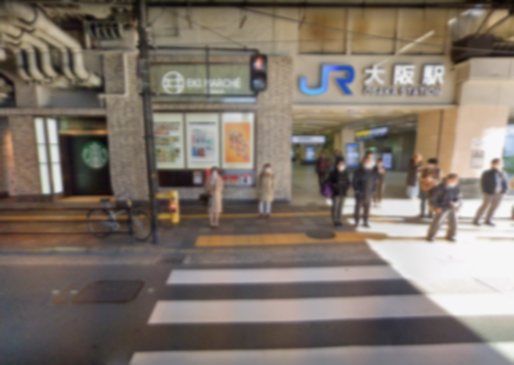

不想開學
發表於 28th Mar 2011
春假都待在老家，沒能碰上幾次面，
就快要開學了，對這樣的我來說，
或許唯一值得期待的……只有「能見到她」這件事而已。
像去年那樣的事情我已經受夠了。
希望一切都能平安無事。
附上準備回程的照片
無題
發表於 8th Apr 2011
從開學到現在已經過了兩天......。
或許不會再發生了？
已經沒事了？
希望就這樣平安無事的繼續下去。
路上看到的貓咪

無題
發表於 16th Apr 2011
你也看得到嗎？
無力感
發表於 29th Apr 2011
果然又開始了，
為什麼要這樣？
比以前還過份，
救救我、到底該怎麼辦？
我不知道
發表於 3th May 2011
班上開始了匿名問卷調查，
除了我，還有多少人願意說出來呢？
從什麼時候開始變成這樣的……。

對不起
發表於 5th May 2011
對不起對不起
對不起
對不起
對不起
對不起
對不起
對不起
對不起
對不起
對不起
對不起
對不起
對不起對不起對不起對不起對不起
無題
發表於 8th May 2011
不想讓她擔心，
不想回去
累了。

夠了
發表於 26th May 2011
已經不行了
夠了
不能就這樣結束
發表於 29th May 2011
這不是真的吧…為什麼現在才讓我知道這些事？
誰可以幫幫我？
無題
發表於 10th Jun 2011
今天學校一團亂，
好像還上新聞了。
無題
發表於 16th Jun 2011
真的能相信她嗎？

？？？
徒花
發表於 20th Jun 2011
對不起，
最後的最後才幫上妳的忙。